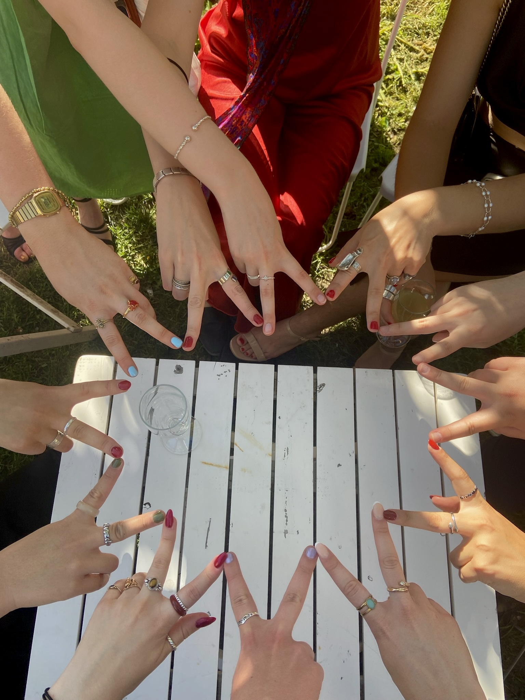
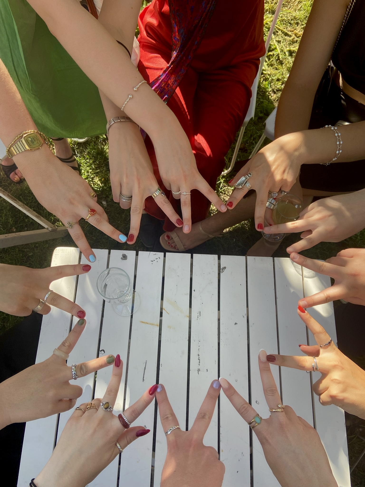

Winter Semester 2024
Studying Abroad in Uppsala, Sweden


 


I went to Uppsala, Sweden for my semester abroad in Winter 2024. Although Uppsala wasn’t my first choice (for obvious reasons… it’s freezing!), I found lasting friendships, thriving student culture, and a unique and unforgettable experience.
I initially was assigned to the student accommodation Flogsta, which is a form of communal living in corridors. Around 12 people in a corridor, who share living spaces like the kitchen, but all have private rooms and bathrooms. After reading online reviews and speaking with previous exchange students, it seemed Flogsta would be the perfect place to build community and make friends as an incoming exchange student who didn’t really know anyone.
I arrived in Uppsala in early January and was immediately met with my first challenge. After a long 14-hour travel day from Southern California, I stumbled into my Flogsta corridor, weary with exhaustion. The reality is, the place was just nasty. It hadn’t been cleaned from previous tenants and it looked like what I would describe as a prison frat house. Long story short, the housing company was kind enough to move me to a new accommodation the next day. I was so relieved!
I moved into my apartment in Klostergatan 16 and was so excited, the only downside being that I was now going to be living alone–no corridor or roommates. Although this made me nervous, it was the better alternative and I knew that with time, I would make plenty of friends regardless of where I lived.
Exploring Uppsala's Cafes & Fika
Uppsala is the 4th largest city in Sweden, yet has such a small, unique feel to it. I was antsy to start exploring and soon had a developing list of my favorite cafes and restaurants in town. Fika was one of the Swedish traditions I was most excited about.
Fika – A Swedish cultural tradition, essentially a coffee break with a social and relaxing emphasis. It involves taking a break from work or other activities, enjoying coffee or tea with a sweet